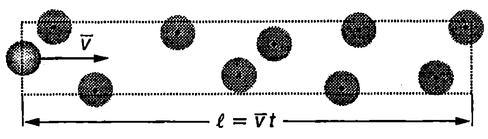
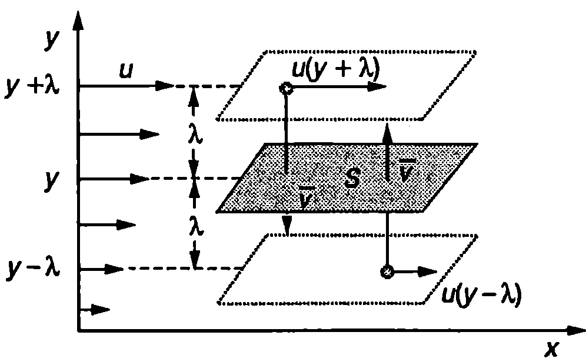
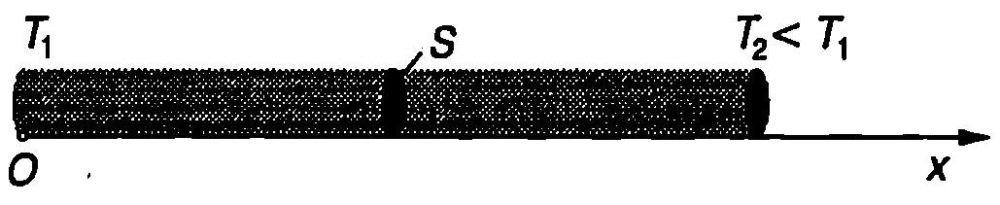
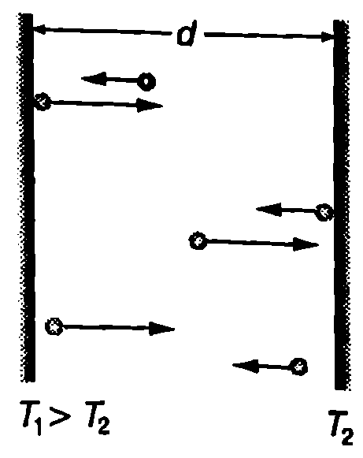
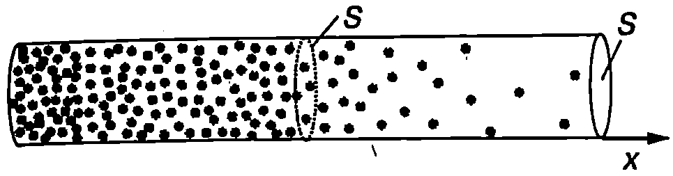

Досега изучавахме само равновесното състояние и равновесните процеси в термодинамичните системи. Когато се наруши равновесието, в системата се наблюдават преносни явления възникват макроскопични потоци, които пренасят импулс, енергия или частици. Преносните явления се изучават от физичната кинетика. Ще се спрем на три от тях: вътрешно триене, топлопроводност и дифузия.
Средна дължина на свободния пробег Ще разглеждаме идеален газ, съставен от еднакви молекули. Средното разстояние $\lambda$, което една молекула изминава между два последователни удара с други молекули, се нарича средна дължина на свободния пробег на молекулите. Средното време $\tau$ между два удара се нарича средно Време на свободния пробег на молекулите. Величините $\lambda$ и $\tau$ са свързани със съотношението $$\lambda = \bar v \tau, $$ където $\bar v$ е средната аритметична скорост на молекулите. За да оценим средната дължина на свободния пробег на молекулите на идеалния газ, ще разгледаме следния най-прост модел: Приемаме молекулите за твърди сфери с диаметър $d$, равен на ефективния диаметър на молекулите. Ще припомним, че ефективен диаметър се нарича разстоянието между центровете на две молекули, при което силите на отблъскване рязко нарастват и взаимодействието на молекулите може да се разглежда като еластичен удар. Нека мислено “замразим” всички молекули, с изключение на една, в положението, в което се намират в даден момент. Ще смятаме, че избраната молекула се движи праволинейно и равномерно със скорост $\bar v$ и при ударите “отмества” от пътя си всички молекули (сфери), до които се докосва. За време $t$ молекулата ще се удари във всички молекули, чиито центрове лежат в цилиндър с радиус на основата си дължина $l = \bar v t$ (Фиг. \ref{fig:35.1}). Броят на ударите е $$z = n_V \pi d^2 \bar v t, $$ където ли е концентрацията на газа. Средното време между два удара е $$\tau = \frac{t}{z} = \frac{1}{\pi d^2 n_V \bar v} = \frac{1}{\sigma n_V \bar v}, $$
Величината $\sigma = \pi d^2$ по характеризира удара между две молекули и се нарича ефективно сечение на разсейване. Когато двете молекули имат различни диаметри $d_1$ и $d_2$, ефективното сечение на разсейване се изразява с формулата $$\sigma = \pi \left(\frac{d_1 + d_2}{2}\right)^2. $$
Заместваме $\tau$ от уравнение \eqref{eq:35.3} в \eqref{eq:35.1} и за средната дължина на свободния пробег на молекулите получаваме $$\lambda = \frac{1}{n_V\sigma}. $$
Точното пресмятане на средната дължина на свободния пробег на молекулите на идеалния газ $\lambda$ е направено за пръв път от Максуел. Той отчита както движението на всички молекули, така и тяхното разпределение по скорости и получава формулата $$\lambda = \frac{1}{n_V\sigma\sqrt{2}} = \frac{0.707}{n_V\sigma}. $$
Ще обърнем внимание, че точната формула \eqref{eq:35.6} за средната дължина на свободния пробег $\lambda$ се различава от получената с помощта на изложения по-горе груб модел формула \eqref{eq:35.5} само с числен коефициент от порядъка на единица. Подобни елементарни модели ще използваме и по-нататък при разглеждането на преносните явления.

`Фиг. 35.1`
Вътрешно триене
В \ref{sec:26} беше разгледан законът на Нютон за силата на вътрешно триене между два слоя от вискозен флуид, които се хлъзгат един спрямо друг. С помощта на молекулно-кинетичната теория ще обясним причините за възникване на силите на вътрешно триене и ще определим от какво зависи вискозитетът $\eta$ на идеалния газ. Да разгледаме ламинарен газов поток, насочен по оста $x$. Разделяме мислено газа на успоредни на оста $x$ слоеве. Отделните слоеве се движат с различни скорости, като скоростта им $u$ нараства по посока на оста $y$ (Фиг. \ref{fig:35.2}). Молекулите на газа извършват два вида движение: хаотично топлинно движение и насочено движение по оста $x$ със скорост $u(y)$. При топлинното движение молекули от един слой непрекъснато преминават в друг слой и обратно. Ако слоевете не се движеха, или ако се движеха с еднакви скорости, поради хаотичния характер на топлинното движение средният импулс, пренесен при размяна на молекули между два слоя, щеше да е нула топлинното движение не води до пренасяне на импулс от една макроскопична област на газа в друга такава област. Когато обаче два слоя, движещи се с различни скорости, обменят молекули, молекулите от по-бързия слой имат по-голяма скорост на насочено движение и след като преминат в по-бавния слой увеличават неговия импулс. Обратно, тяхното място в по-бързия слой се заема от идващи от по-бавния слой молекули с по-малка скорост на насочено движение $u$ и импулсът на по-бързия слой намалява. Така става обмен на импулс между двата слоя. Съгласно с втория принцип на механиката силата, която действа на всеки от слоевете, е равна на скоростта, с която се променя неговият импулс. По този начин два съседни слоя, движещи се с различни скорости, си взаимодействат със
сили, наречени сили на вътрешно триене. За да изследваме явлението вътрешно триене количествено, ще използваме следния прост модел, предложен още от Джаул: Ще смятаме, че всички молекули извършват топлинно движение с еднаква по големина скорост, равна на средната аритметична скорост $\bar v$. Освен това опростено ще смятаме, че при топлинното движение молекулите са разделени на шест еднакви потока, успоредни на координатните оси. Например 1/6 от всички молекули се движи в положителната посока на оста $y$ и 1/6 в отрицателната посока на оста $y$; 1/6 от молекулите се движи в положителната посока на оста $x$ и т.н. Само молекулите, които се движат успоредно на оста $y$, преминават през площадката $S$, разделяща два слоя от газа (Фиг. \ref{fig:35.2}). За време $dt$ отдолу нагоре през площадката ще преминат 1/6 от всички молекули, които се намират в паралелепипеда с обем $S\bar vdt$, т.е.
$$N = \frac{1}{6}n_V S \bar v dt\ \text{молекули}, $$

`Фиг. 35.2`
където $n_V$ е концентрацията на молекулите на газа. Скоростта на насочено движение на всяка молекула е равна на скоростта $u$ на слоя, в който молекулата за последен път се е ударила в друга молекула преди да пресече площадката $S$. За различните молекули последният удар е станал на различно разстояние от площадката $S$. В нашия модел обаче ще приемем, че за всички молекули последният удар е станал на едно и също разстояние от площадката, равно на средната дължина на свободния пробег $\lambda$ на молекулите. Тогава всички молекули, пресичащи площадката отдолу нагоре, имат еднаква скорост на насочено движение $u(y-\lambda)$, на която съответства импулс $mu(y-\lambda)$. За време от те пренасят през площадката импулс $$p_1 = Nmu(y-\lambda) = \frac{1}{6}n_V S \bar v dtmu(y-\lambda). $$
Тъй като концентрацията на молекулите навсякъде в еднаква, за време $dt$ същият брой $N$ молекули пресича площадката в противоположната посока. Тези молекули обаче са претърпели последния си удар на разстояние $\lambda$ над площадката, където скоростта на насочено движение е $u(y+\lambda)$. Пренесеният от тях импулс е $$p_2 = Nmu(y+\lambda) = \frac{1}{6}n_V S \bar v dtmu(y+\lambda). $$
Изменението на импулса на газа под площадката е $$dp = p_2 - p_1 = \frac{1}{6}n_V S \bar v m(u(y+\lambda)-u(y-\lambda)) dt. $$
Тъй като средната дължина на свободния пробег е много малка в сравнение с разстоянието, на което градиентът на скоростта $du/dy$ се изменя съществено, можем да запишем, че $$u (y+\lambda) - u(y - \lambda) = 2\lambda\frac{du}{dy}.$$
Тогава уравнение \eqref{eq:35.10} добива вида
$$dp = \frac{1}{3}n_V S \bar v m\lambda\frac{du}{dy} dt. $$
Съгласно с втория принцип на механиката на газовия слой под площадката действа сила
$$F = \frac{dp}{dt} = \frac{1}{3}n_V S \bar v m\lambda\frac{du}{dy} , $$
която е насочена по оста $x$, т.е. тя ускорява по-бавния слой. На слоя над площадката действа същата по големина сила, но нейната посока е противоположна на посоката на насочено движение на молекулите — бързият слой се забавя.
Сравняваме получения резултат със закона на Нютон за силата на вътрешно триене (вж. стр.141)
$$F = \eta S\frac{du}{dy}$$

`Фиг. 35.3`
\begin{table}
\begin{tabular}{cc}
Вещество& K, W m.K\\
Азот (газ)& 0,0257\\
Водород (газ)& 0,183\\
Въздух (газ)& 0,026\\
Спирт& 0,166\\
Вода& 0,6\\
Олово& 35\\
Никел& 91\\
Мед& 401\\
\end{tabular}
Коефициент на топлопроводност к на някои вещества при температура T = 300 K.
\label{table:35.1}
\end{table}
и определяме вискозитета и на идеалния газ
$$\eta = \frac{1}{3}n_V S \bar v m\lambda , $$
Топлопроводност
Цилиндрична пръчка с напречно сечение $S$ е нагрята неравномерно (Фиг. \ref{fig:35.3}). Тъй като температурата се изменя по дължината на пръчката, в нея възникват макроскопични топлинни потоци, които пренасят количество топлина от по-топлия към по-студения край на пръчката. Опитно е установено, че количеството топлина, пренесено за единица време през напречното сечение 5 на пръчката, е правопропорционално на температурния градиент $dT/dx$
$$Q = -\kappa S \frac{dT}{dx}. $$
Знакът минус показва, че топлината се пренася от по-топлия, към по студения край на пръчката, т.е. в посоката, в която температурата $T$ намалява. Коефициентът на пропорционалност $\kappa$ (капа) характеризира веществото, от което е направена пръчката, и се нарича коефициент на топлопроводност. В табл. 35.1 са дадени коефициентите на топлопроводност к на някои вещества.
От табл.35.1. се вижда, че най-добри проводници на топлина са металите, докато газовете имат много малък коефициент на топлопроводност.
За да се определи коефициентът на топлопроводност на идеалния газ, може да се използва същият модел, който беше подробно описан при разглеждането на явлението вътрешно триене. За коефициента на топлопроводност на идеалния газ се получава
$$\kappa = \frac{1}{3}n_V S \bar v m\lambda c_V , $$
където $c_V$ в специфичният топлинен капацитет при постоянен обем на газа. Заместваме средната дължина на свободния пробег $\lambda$ от формула \eqref{eq:35.6} в \eqref{eq:35.15} и получаваме
$$\kappa \propto \frac{\bar v m}{\sigma} c_V. $$
Съотношението \eqref{eq:35.16} показва, че топлопроводността на газовете не зависи от тяхната концентрация $n_V$. Същият извод се отнася и за коефициента на вътрешно триене. Този резултат на пръв поглед е неочакван, но има просто обяснение. Когато концентрацията (плътността) на газа е голяма, в пренасянето на енергия и на импулс участват голям брой молекули. Те обаче много често се удрят една в друга, затова всяка молекула пренася много малка порция енергия или импулс и то на малки разстояния (от порядъка на средната дължина на свободния пробег $\lambda$). При малка плътност всяка молекула пренася по-голяма порция енергия или импулс на по-голямо разстояние $\lambda$, което компенсира намаляването на броя на молекулите.
Не противоречи ли направеният извод на факта, че силно разредените газове са много добри топлоизолатори? Например въздухът между двойните стени на термосите се изпомпва, за да се подобри топлинната изолация. При атмосферно налягане средната дължина на свободния пробег на молекулите на въздуха $\lambda$, изчислена по формула \eqref{eq:35.6}, е много по-малка от разстоянието $d$ между двете стени на термоса. Ако започнем да намаляваме налягането (изпомпваме въздуха между двойните стени на термоса), концентрацията на молекулите намалява и дължината на свободния им пробег нараства, но докато е в сила неравенството $\lambda \ll d$, коефициентът на топлопроводност остава постоянен. Когато обаче газът стане силно разреден, много по-често се извършват удари на молекулите в стените на съда, отколкото между самите молекули (Фиг. \ref{fig:35.4}). В този случай за дължи на на свободния пробег може да се приеме разстоянието $d$ между стените на съда: $\lambda = d$. При по-нататъшното разреждане на газа $\lambda$ няма да се изменя (ударите между молекулите вече не играят почти никаква роля молекулите се удрят само в стените на съда и пренасят енергия директно от стената с по-висока температура на стената с по-ниска температура). Тогава съгласно с формула \eqref{eq:35.15} коефициентът на топлопроводност $\kappa$ намалява правопропорционално на концентрацията $n_V$ на газа.

`Фиг. 35.4`
Пример 35.1
Разстоянието между двойните стени на термос е $d = 4$ mm. Между тях се намира въздух при температура $T = 300$ К. Оценете при какво налягане топлопроводността на въздуха ще започне да намалява. Приемете, че ефективното сечение на молекулите на въздуха $\sigma = 5.10^{-19}$ m$^2$. \end{psexample}
Решение
Дължината на свободния пробег на молекулите се определя от формула \eqref{eq:35.6}: $$\lambda = \frac{0,!707}{n_V \sigma}$$
Изразяваме концентрацията $n_V$ на молекулите на въздуха чрез налягането $p$ и температурата $T$, $n_V = p/kT$ (вж. формула \eqref{eq:32.12} на стр.177) и я заместваме във формулата за $\lambda$.
Получаваме: $\displaystyle \lambda = \frac{0,!707 kT}{p\sigma}$ Ще приемем, че топлопроводността започва да намалява, когато $\lambda = d$. Тогава за налягането получаваме
$$p=KT= \frac{(1,!38.10^{-23}\mathrm{\frac{J}{K}}) (300\mathrm{K})}{(0,!004~\mathrm{m}) (5.10^{-19}\mathrm{m^2})} \approx 2\mathrm{Pa}.$$
Дифузия

`Фиг. 35.5`
Ако в чаша с вода капнем мастило, в резултат на топлинното движение неговите молекули постепенно се смесват с молекулите на водата и тя се оцветява. По същия начин ароматът от капка парфюм постепенно изпълва стаята. Явлението, при което в резултат на хаотичното топлинно движение молекулите на една течност (газ) се смесват с молекулите на друга течност (газ), се нарича дифузия. При дифузия молекулите винаги се движат от област, където тяхната концентрация в висока, към областите с по-ниска концентрация на дадения вид молекули.
Да разгледаме цилиндър, запълнен с два газа, които са разделени с преграда. Отляво на преградата е разположен газ 1, а отдясно газ 2. Ако се премахне преградата, започва процес на дифузия и газовете се смесват. На Фиг. \ref{fig:35.5} схематично е показано разпределението на молекулите на газ 1 в даден момент. Тяхната концентрация $n_{V1}$ намалява по дължината на цилиндъра (по оста $x$) и става пренасяне на молекули на газа 1 отляво на дясно, докато се изравни концентрацията им в целия обем на цилиндъра. Аналогичен процес, само че в противоположната посока, протича и с другия газ. Опитно е установено, че масата $dM_1$ от газ 1, която преминава за време $dt$ през напречното сечение $S$ на цилиндъра, е правопропорционална на градиента на концентрацията $dn_{V1}/dx$ и се изразява с уравнението $$dM_1 = -D_1 m_1 \frac{dn_{V1}}{dx} Sdt, $$ където коефициентът на пропорционалност $D_1$ се нарича коефициент на дифузия. Аналогично уравнение може да се запише и за молекулите на втория газ, само че за тях коефициентът на дифузия O$_2$ ще има друга стойност. Зависимостта \eqref{eq:35.17} е в сила и при дифузия на течности. Тя е била получена за пръв път експериментално през 1885 г. от немския физиолог Адолф Фик (1855-1901) и е наречена в негова чест закон на Фик.
Ако газовете от двете страни на преградата са еднакви, също ще се извърши дифузия. Взаимната дифузия на два еднакви газа се нарича самодифузия. За да се наблюдава експериментално самодифузията, трябва молекулите на единия газ да се “бележат” по някакъв начин. Например ядрата на “белязаните” молекули могат да са радиоактивни. Самодифузията също се описва от закона на Фик. Тъй като белязаните и небелязаните молекули са еднакви, те ще се характеризират с един и същ коефициент на дифузия $D$.
За идеален газ с помощта на вече описания приближен модел за коефициента на дифузия $D$ се получава $$D = \frac{1}{3} \bar v \lambda. $$
Задачи
- Ефективният диаметър на молекулите на кислорода е $d = 3.10^{-10}$ m. При стайна температура ($T = 300$ К) и атмосферно налягане ($p = 1.10^5$ Pa) тяхната средната аритметична скорост е 450 m/s. При тези условия определете:
а) средната дължина на свободния пробег на молекулите;
б) колко удара средно извършва една молекула с други молекули за една секунда;
в) колко пъти средната дължина на свободния пробег на молекулите е по-голяма от средното разстояние между молекулите. Моларната маса на кислорода е $M = 0,!032$ kg/mol. 2. С дадено количество идеален газ се извършва процес, при който налягането на газа нараства 2 пъти. Колко пъти се изменя средната дължина на свободния пробег на молекулите на газа, ако процесът е: а) изотермен; 6) изохорен?
-
При стайна температура и атмосферно налягане коефициентът на топлопроводност на хелия е 9 пъти по-голям от този на аргона. Определете отношението на ефективните диаметри на атомите на аргона и хелия $d_{\mathrm{Ar}}/d_{\mathrm{He}}$.
-
Двуатомен идеален газ, чиито молекули са с твърда връзка (не могат да трептят), се разширява адиабатно, при което обемът му нараства 2 пъти. Как и колко пъти се изменя вискозитетът $\eta$ на газа?
-
Едноатомен идеален газ се свива адиабатно, при което обемът на газа намалява 4 пъти. Как и колко пъти се изменя коефициентът на дифузия $D$ на газа?